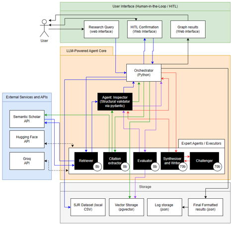
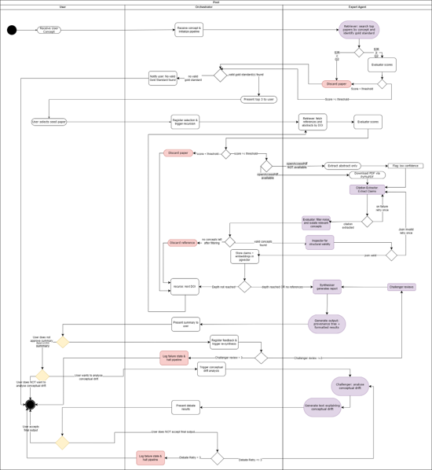
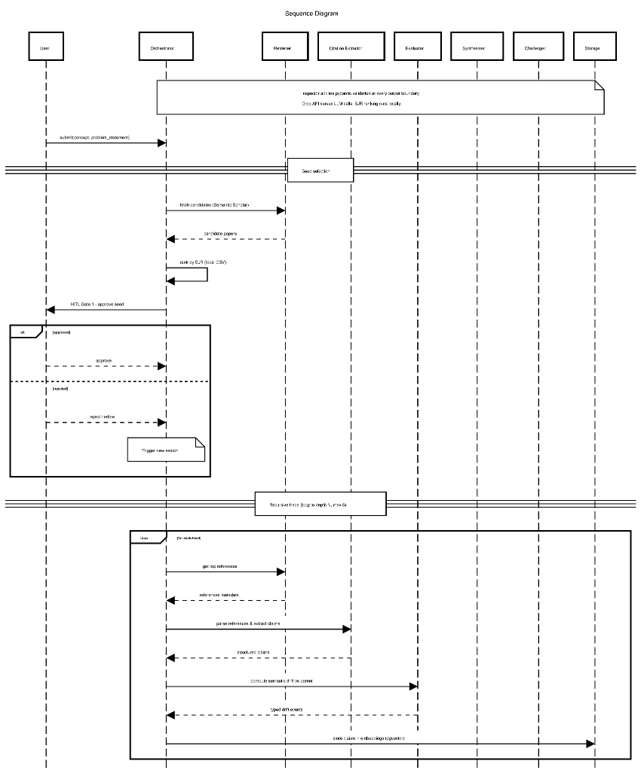
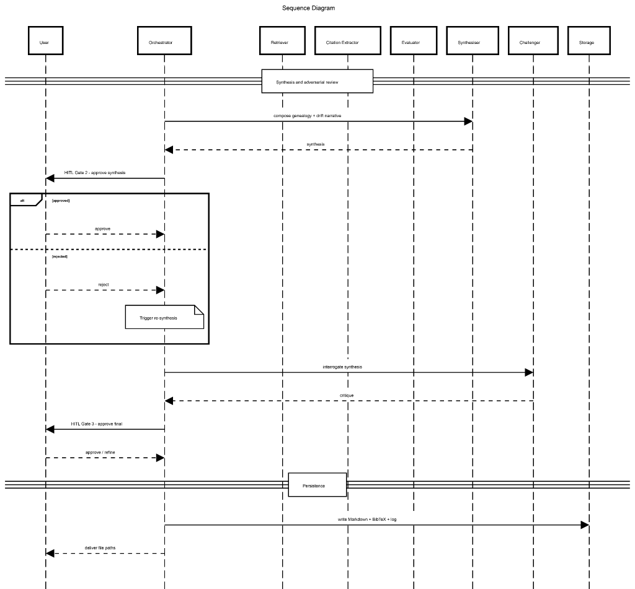

← Back to Intelligent Agents Module
Development Team Project: Project Report
Group B
Type: Team Assignment | Weighting: 20% of module mark | Word Count: 1,000 words | Deadline: End of Unit 6 | Status: ✓ Complete
1. System Overview
This report proposes the design of an LLM-powered multi-agent system for academic concept tracing and genealogy. The system takes a user-defined concept, identifies a highly cited 'Gold Standard' seed paper, and recursively extracts and tracks its underlying claims backward through its citation chains. The system builds an inverted semantic provenance graph that maps the genealogical evolution and conceptual drift of the idea across multiple levels of research, ensuring traceable outputs with a human kept in the loop at each key decision point.
2. System Requirements
Hardware: Minimum 4 GB RAM and 20 GB available storage. No local GPU is required; heavy processing is offloaded to external cloud APIs (Tyndall et al., 2025). The memory and disk footprint supports containerised environments and local databases.
Software and Connectivity: Requires a Python 3.12+ environment, Docker (for PostgreSQL/pgvector containers), and continuous outbound HTTPS access to the Groq and Semantic Scholar APIs. Offline operation is not supported.
Coordination Constraint: Agents do not use unstructured peer-to-peer coordination; their activations and context sharing are dynamically managed by a central Orchestrator via an evolving global system state (Dang et al., 2025).
Assumptions: user input is well-formed English, with no translation or disambiguation provided and that Semantic Scholar coverage is adequate for the user's concept domain.
3. Design Decisions
The system adopts a hybrid deliberative-reactive architecture (Stone and Veloso, 2000). A centralised deliberative Orchestrator manages global state and execution loops via LangGraph, decomposing high-level research goals into actionable sub-tasks (Russell and Norvig, 2021), following resource-bounded practical reasoning, committing to intentions across multiple steps (Bratman et al., 1988). Execution-level tasks are handled by reactive specialist agents (Retriever, Citation Extractor, Evaluator, Synthesiser, and Challenger) responding directly to inputs without global state, consistent with subsumption architecture (Brooks, 1991). This structural separation isolates failures at the agent boundary level, preventing context-window degradation in the Orchestrator, keeping token expenditure proportional by assigning lightweight models to reactive agents and larger models only where comparative reasoning is required (see Section 7).

Figure 1. Hybrid multi-agent architecture, internal data flow, and external dependencies.
Following extraction, the Evaluator isolates relevant concepts and filters academic noise before information reaches the synthesis stage, creating an explicit validation gate that reduces the risk of hallucination propagation across the pipeline (Maynez et al., 2020).
4. Methodology
LLM output variance persists even under deterministic configurations in hosted API environments (Atıl et al., 2025), making conventional linear delivery inadequate. To manage this variance, the project adopts an iterative LLMOps cycle, continuously testing, evaluating, and refining the prompt flow to handle edge cases and generalise to new inputs (Haque, 2024). In practice, two-week sprints are used to build and validate each agent independently considering a static "Gold Standard" paper baseline. Because evaluating models against a single, static instruction template is known to cause brittleness and over-specialisation, prompt refinement is strictly bounded to a maximum of three iterations against this fixed set (Mizrahi et al., 2024). This strict bounding prioritises MVP functionality: if complex features fail, the pipeline degrades gracefully, ensuring each sprint yields a usable, verified Increment (Schwaber and Sutherland, 2020).
5. System Design
| Agent | Input | Output |
|---|---|---|
| Orchestrator | High-level user query | Decomposed sub-tasks and global state management |
| Retriever | Decomposed sub-tasks | Academic metadata and top-3 candidate seed papers |
| Citation Extractor | Approved seed paper PDF | Extracted inline citations, reference chains, and raw claims |
| Evaluator | Extracted raw claims and context | Filtered relevant concepts, claim validity scores, and vector-ready JSON structures |
| Synthesiser | Validated claims and citation data | Grounded synthesis and preliminary literature summary |
| Challenger | Synthesised summary and embeddings | Conceptual drift analysis and counter-arguments |
| Inspector | Raw structured output from any upstream agent | Schema-compliant JSON or rejection signal triggering a single retry |
Execution Constraints: Max 1 retry for Pydantic validation errors; max 3 retries for Synthesiser/Challenger debates.
HITL Gates: Mandatory user approval for: 1) Target seed selection, 2) Synthesis approval, 3) Final output approval.

Figure 2. Execution workflow detailing Orchestrator routing, agent loops, and validation gates.

Figure 3A. Sequence diagram detailing submission, gold standard seed selection, and recursive citation tracing.

Figure 3B. Sequence diagram detailing synthesis, adversarial Challenger review, and final data persistence.
6. Anticipated Challenges
| Cause | Mitigation |
|---|---|
| Citation-graph explosion: Unbounded traversal exhausts API quotas and runtime. | A three-constraint bounding scheme (depth cap, seed concept tracking, and SJR-ranked limits) maintains tractability, drawing on constrained snowball sampling (Lecy and Beatty, 2012) |
| Malformed output: Models routinely emit structurally invalid JSON that breaks downstream pipelines (Cemri et al., 2025). | The Inspector applies deterministic Pydantic schema validation at each agent boundary to handle persistent LLM non-determinism (Atıl et al., 2025). |
| Hallucination and unsound reasoning: Schema-valid output can still contain plausible but factually wrong claims (Maynez et al., 2020). | The Challenger interrogates the Synthesiser's output through structured adversarial debate to surface weak claims and enforce robust conclusions (Irving, Christiano and Amodei, 2018). |
| User-system misalignment: Unsupervised pipelines drift from user intent, and static models degrade over time (Mosqueira-Rey et al., 2023). | Three mandatory HITL gates ensure the user can explicitly Approve, Reject, or Refine outputs. |
7. Tools, Libraries, Models and Environments
- Orchestration & Validation: LangGraph manages workflows through stateful, directed graphs, enabling the cyclical and iterative reasoning that linear, DAG-based frameworks fail to support (Sapkota et al., 2025). Output format instability, even at zero temperature, risks severe downstream parser failures (Atıl et al., 2025).
- LLM Inference: Groq API runs lightweight tasks on llama-3.1-8b-instant and reasoning on llama-3.3-70b-versatile. Its LPU architecture ensures low-latency, deterministic execution vital for agent coordination (Groq, 2025a) under an academic-friendly license (Groq, 2025b).
- Embeddings and Extraction: Local CPU models handle semantic retrieval using allenai/specter2 (Singh et al., 2023) and drift detection using the Sentence-BERT framework via all-mpnet-base-v2 (Reimers and Gurevych, 2019). Semantic Scholar API resolves open-access PDFs natively (AI2, 2023; arXiv, n.d.), parsed via PyMuPDF (Artifex Software, Inc., 2026).
- Storage and Environment: PostgreSQL 16 with pgvector unifies metadata and embeddings, avoiding dedicated vector database overhead (pgvector, 2021). SJR datasets rank journals locally (SCImago Journal & Country Rank, n.d.). The stack runs on Python 3.12 and Docker Compose.
- Testing and Evaluation: Deterministic infrastructure (API connections, routing, and pgvector operations) is tested using pytest; non-deterministic LLM execution is evaluated at runtime via the system's native mechanisms: the Inspector for structural validation and the Challenger for semantic adversarial review.
8. Conclusion
The proposed hybrid multi-agent system addresses the core objectives of retrieving, synthesising, and storing academic research. Separating coordination from execution isolates failures and prevents context degradation. Recognising the inherent non-determinism of LLMs, the design enforces strict structural validation, adversarial reasoning via the Challenger, and mandatory Human-in-the-Loop gates, ensuring the final output remains grounded, traceable, and aligned with user intent.
References
- AI2 (2023) 'Semantic Scholar API License Agreement'. Available at: https://www.semanticscholar.org/product/api/license (Accessed: 29 May 2026).
- arXiv (n.d.) 'License and copyright'. Available at: https://info.arxiv.org/help/license/index.html (Accessed: 29 May 2026).
- Atıl, B., et al. (2025) 'Non-determinism of "deterministic" LLM system settings in hosted environments', in Proceedings of the 5th Workshop on Evaluation and Comparison of NLP Systems. Mumbai, India: Association for Computational Linguistics, pp. 135-148. doi: 10.18653/v1/2025.eval4nlp-1.12.
- Bratman, M.E., Israel, D.J. and Pollack, M.E. (1988) 'Plans and resource-bounded practical reasoning', Computational Intelligence, 4(4), pp. 349-355. doi:10.1111/j.1467-8640.1988.tb00284.x.
- Brooks, R.A. (1991) 'Intelligence without representation', Artificial Intelligence, 47(1-3), pp. 139-159. doi:10.1016/0004-3702(91)90053-M.
- Cemri, M., et al. (2025) 'Why do multi-agent LLM systems fail?', in Advances in Neural Information Processing Systems, 38 (NeurIPS 2025 Datasets and Benchmarks Track). Available at: https://proceedings.neurips.cc/paper_files/paper/2025/hash/b1041e52d3be19f0a9bc491657488e4a-Abstract-Datasets_and_Benchmarks_Track.html (Accessed: 2 June 2026).
- Dang, Y., et al. (2025) 'Multi-Agent Collaboration via Evolving Orchestration', arXiv preprint arXiv:2505.19591. doi: 10.48550/arXiv.2505.19591.
- Groq (2025a) 'Rate limits'. Available at: https://console.groq.com/docs/rate-limits (Accessed: 29 May 2026).
- Groq (2025b) 'Acceptable use and responsible AI policy'. Available at: https://console.groq.com/docs/legal/ai-policy (Accessed: 29 May 2026).
- Haque, K.N. (2024) 'Understand the development lifecycle of a large language model (LLM) app', Microsoft Tech Community. Available at: https://techcommunity.microsoft.com/discussions/azure-ai-foundry-discussions/understand-the-development-lifecycle-of-a-large-language-model-llm-app/4186738 (Accessed: 17 May 2026).
- Irving, G., Christiano, P. and Amodei, D. (2018) 'AI safety via debate', arXiv [Preprint]. Available at: https://arxiv.org/abs/1805.00899 (Accessed: 30 May 2026).
- Lecy, J.D. and Beatty, K.E. (2012) 'Representative literature reviews using constrained snowball sampling and citation network analysis', SSRN Electronic Journal [Preprint]. doi:10.2139/ssrn.1992601.
- Maynez, J., et al. (2020) 'On faithfulness and factuality in abstractive summarization', in Proceedings of the 58th Annual Meeting of the Association for Computational Linguistics. Association for Computational Linguistics, pp. 1906-1919. doi:10.18653/v1/2020.acl-main.173.
- Mizrahi, M., et al. (2024) 'State of what art? A call for multi-prompt LLM evaluation', Transactions of the Association for Computational Linguistics, 12, pp. 933-949. doi:10.1162/tacl_a_00681.
- Mosqueira-Rey, E., et al. (2023) 'Human-in-the-loop machine learning: a state of the art', Artificial Intelligence Review, 56(4), pp. 3005-3054. doi:10.1007/s10462-022-10246-w.
- pgvector (2021) pgvector: open-source vector similarity search for PostgreSQL [Software]. Available at: https://github.com/pgvector/pgvector (Accessed: 24 May 2026).
- Artifex Software, Inc. (2026) PyMuPDF [Software]. GitHub. Available at: https://github.com/pymupdf/pymupdf (Accessed: 7 June 2026).
- Reimers, N. and Gurevych, I. (2019) 'Sentence-BERT: sentence embeddings using Siamese BERT-networks', in Proceedings of the 2019 Conference on Empirical Methods in Natural Language Processing. Hong Kong: Association for Computational Linguistics, pp. 3982-3992. doi:10.18653/v1/D19-1410.
- Russell, S. and Norvig, P. (2021) Artificial intelligence: a modern approach. 4th edn. Hoboken, NJ: Pearson.
- Sapkota, R., et al. (2025) 'LangChain vs. LangGraph vs. LangSmith: taxonomies of agentic AI toolchains for end-to-end orchestration', TechRxiv [Preprint]. doi:10.36227/techrxiv.175695645.52670060/v1.
- SCImago Journal & Country Rank (n.d.) SJR - SCImago Journal & Country Rank. Available at: https://www.scimagojr.com/journalrank.php (Accessed: 24 May 2026).
- Schwaber, K. and Sutherland, J. (2020) The Scrum Guide: The Definitive Guide to Scrum: The Rules of the Game. Scrum.org. Available at: https://scrumguides.org/docs/scrumguide/v2020/2020-Scrum-Guide-US.pdf (Accessed: 2 June 2026).
- Singh, A., et al. (2023) 'SciRepEval: a multi-format benchmark for scientific document representations', in Proceedings of the 2023 Conference on Empirical Methods in Natural Language Processing. Singapore: Association for Computational Linguistics, pp. 5548-5566. doi: 10.18653/v1/2023.emnlp-main.338.
- Stone, P. and Veloso, M. (2000) 'Multiagent systems: a survey from a machine learning perspective', Autonomous Robots, 8(3), pp. 345-383. doi:10.1023/A:1008942012299.
- Tyndall, E. et al. (2025) 'Impact of retrieval augmented generation and large language model complexity on undergraduate exams created and taken by AI agents', Data & Policy, 7, p. e57. doi:10.1017/dap.2025.10024.
Appendix A: Spelling and grammar check
Figure 4. Spell check evidence in Google Docs.